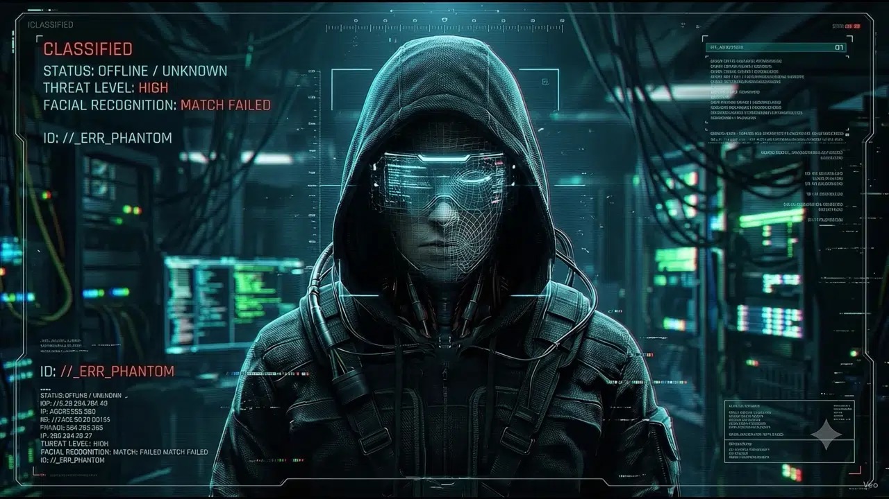

ID // _ERR_PHANTOM
MATCH: FAILED
0x01 // IDENTITY SPOOF
Zero-Trace Cloak
Disposable encrypted mail relays & masked login tunnels.
> SCROLL TO EXECUTE 240-FRAME KERNEL INJECTION & UNLOCK MODULES ↓
Zero-trace identity masking & disposable SMTP darknet relays—Proton Vault, SimpleLogin, 33Mail, and CrackOne Inbox. Facial & IP recognition: MATCH FAILED.
Direct wireframe visor injection into DeepSeek, BytePlus Playground, and FreeAI clusters with 0.32ms packet latency and zero rate limits.
Unrestricted 4K neural image synthesis, voice cloning & optical watermark scrubbing powered by Raphael AI, Pollinations, ElevenLabs, and Video Eraser.
DeepSeek · BytePlus · Raphael · Pollinations · FreeAI · ElevenLabs · Video Eraser
Proton Vault · SimpleLogin · 33Mail Relay · CrackOne Terminal
> Hover radar to lock target coordinates · Click any node to open SSH tunnel